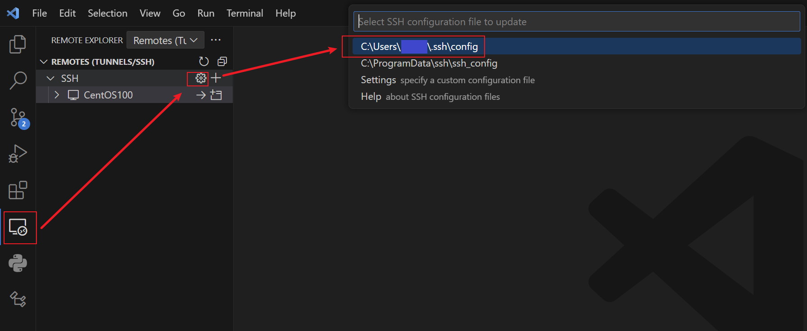

VS Code Remote SSH 密钥登录
序言
VS Code 的 Remote SSH 插件提供了远程连接其他主机的功能。连接就需要用户名和密码，而密钥可以在每次登录时不输入密码、直接登录。
但是，VS Code 实际上只是提供了 GUI，而 SSH 如何使用密钥登录，则是另一码事。两者不应该混为一谈。
本文将主要讲解 SSH 密钥在本机和远程机器上如何配置。之后，讲解 VS Code Remote SSH 插件的使用。
环境
- 本机：Windows 10
- 远程机器：本地虚拟机 CentOS 8，root 用户
本机 SSH 配置
使用 ssh-keygen 命令，会在 C:\users\<user>\.ssh 目录下创建本机的 RSA 公私钥：
1 | PS C:\Users\Gustav\.ssh> dir |
id_rsa 是私钥，id_rsa.pub 是公钥
远程主机 SSH 配置
将本机的 id_rsa.pub 上传到 Linux 远程主机的 ~/ssh 目录，并改名为 authorized_keys
1 | [root@CentOS100 .ssh]# ll |
测试
以上步骤，就是 SSH 密钥登录的全部配置。
打开本机的PowerShell，使用 ssh <user>@<ip> 测试连接。应该能够直接登录，不需要输入密码。
1 | PS C:\Users\Gustav> ssh root@CentOS100 |
VS Code 配置
-
安装 Remote - SSH 插件：

-
依次点击这3个按钮，进入配置文件：

-
填写配置文件（这个文件其实是主机的 SSH 配置）：

Host：识别这个远程连接的 Id，可以随便起个名字；HostName：远程主机的域名或 IP；User：登录远程主机的用户；IdentityFile：对应authorized_keys的私钥的存放位置；
关于配置文件的几点说明：
- 如果没有在远程主机配置
authorized_keys，那么IdentityFile属性不会起作用。登录时会要求输入密码； - 在这个案例中，
IdentityFile其实没必要配置。因为authorized_keys就是本机的公钥，而 SSH 默认使用本机的私钥尝试连接； - 一般情况下，
authorized_keys不会是本机的公钥，此时IdentityFile必须要配置，否则就要输入密码；